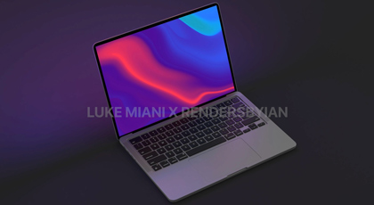
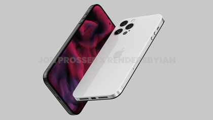

Today apple has announced a new event scheduled for next week on Monday October
18th. This special event titled "Unleashed" will be an online event scheduled
that will start at 10:00 am PDT and can be live streamed on apple.com or youtube. This
event for apple would be its 2nd of the fall season, as they unvailed a plethora of new
products last month which they do every september.
Expected products to be launched
Apples "Unleashed" event will be focused on new Macs that will feature new apple silicon
New 14 inch and 16 inch MacBook Pros with a new faster M1X chipset
A new Mac mini featuring the new M1X chip
The long rumored AirPods 3 have a chance to be announced as well

Apple is set to unveil its new MacBook pros that will feature many new changes and features
compared to its predecessor. First it is rumored the all new MacBook Pros will see a redesign to a more boxy
look like Apples Ipad Pros. The new Macbook will have a Mini LED display, the addition of an SD card slot, HDMI port,
and the return of a new magsafe style of charging that apple implemented in older MacBooks. Along with these changes
Apple is also rumored to remove the infamous touchbar that was introduced with the 2016 MacBook Pros and will bring back
the physical F keys at the top of the keyboard. Along with the physical changes to the computer, apple is also set to unveil
their new M1X chipset, as a follow up to the M1 proccessor they introduced last year. leaks have suggested that this chip will
bring double the CPU performance that its predecessor brought along with more GPU cores as well. This will be apples next step
in their transition from intel based chips to their own in house apple silicon.
A week before the Iphone 13 lineup was unveiled at Apples Iphone event in September, a leak surfaced revealing a
potential design for Apples Iphone 14 Pro lineup of phones. This leak comes from none other than Jon Prosser
from the Front Page Tech youtube channel and website. Jon has had many correct Apple leaks and is 74.6% accurate according to appletrack.com.

The image above are renders of the new Iphone 14 Pro Max based on leaked images and schematics that Jon recived from his sources
within Apple. Taking a look at the renders we can see a complete redesign from the previous Iphones we are familiar with.
Apple seems to be getting rid of the notch on the front of the display in favor of a hole punch camera design that common
with many android phones. Does that means Apple is getting rid of its biometric Face ID system? According to Jon this is not
the case. Apple will keep Face ID by putting the sensors under the display. Another big change to the Iphone 14 is coming to the back of
the phone. The camera bump appears to be flush into the back of the phone, which we havent seen since the Iphone 5s. The sides of the phone
change from stainless steel like we see in todays phones in favor of titanium. Jon explains that the Iphone 14 will resemble the previous Iphone 4.
The glass on both sides fuse into the sides of the phone ecactly as the iphone 4 series did and will have the same circular
side button layout as the iphone 4, as you can see in the renders. Jon revealed more images on his website Frontpagetech.com.
Iphones I have Owned and used
Year
Model
color
2013
iPhone 5s
Space Gray
2015
iPhone 6s
Space Gray
2017
iPhone 8
Space Gray
2019
iPhone 11 pro
Gold
My Thoughts
If the leaks hold up to be true, this will be Apples biggest redesign of the Iphone since they introduces the Iphone X, making it a worthwhile upgrade for consumers.
Apple enthusiasts have wanted apple to get rid of the notch in favor of an all screen design for years and they seem to
finally being doing just that. This will be more than just an incremental upgrade that Apple normaly does with their Iphone
lineup. Hopefully Apple will also introduce more features like an always on display to go with the new all screen design. I am
looking forward to seeing this device and how it compares to Apples previous flagship phones.